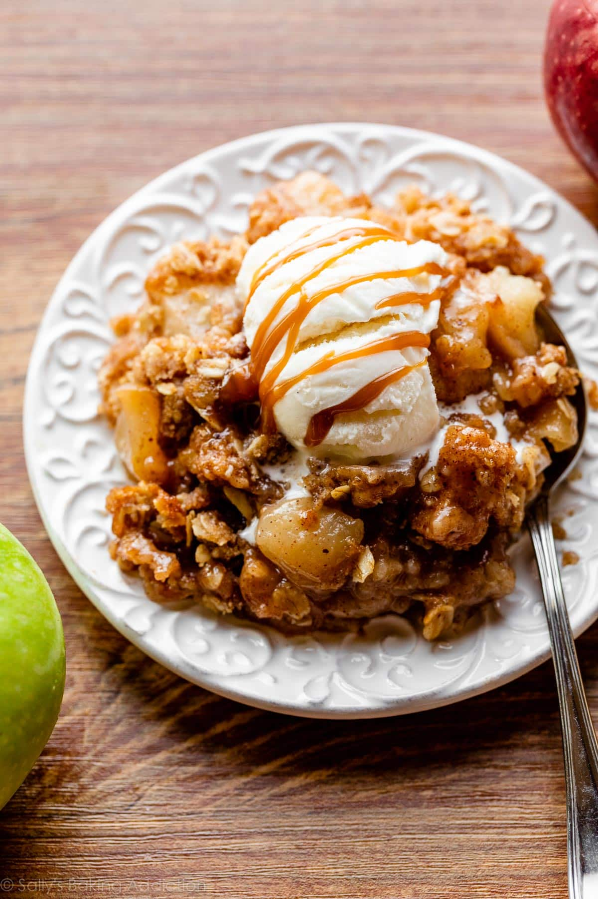

Apple Crisp

Description
This dessert is the the perfect balance of ooey gooey caramelized apples and crispy brown sugar topping. Enjoy on an October evening for the best fall experience.
Ingredients
Filling
- 8 medium peeled apples
- 1/2 cup packed brown sugar
- 1/4 cup all-purpose flour
- 1 teaspoon pure vanilla extract
- 1 teaspoon ground cinnamon
- 1/2 teaspoon ground nutmeg
- 1/4 teaspoon salt
Topping
- 3/4 cup all-purpose flour
- 3/4 cup packed brown sugar
- 1 teaspoon ground cinnamon
- 1/2 cup unsalted butter, cold and cubed
- 1 cup old-fashioned whole rolled oats
Steps
- Preheat oven to 350°F (177°C). Lightly grease a 9×13-inch baking pan.
- Mix all of the filling ingredients together in a large bowl, then spread into the baking pan.
- Make the topping: Whisk the flour, brown sugar, and cinnamon together in a medium bowl. Cut in the butter using a pastry cutter or fork until the mixture becomes super crumbly. Stir in the oats. Sprinkle over filling.
- Bake for 45 minutes or until the topping is golden brown and the fruit juices are bubbling around the edges. Remove from the oven, place on a wire rack, and allow to cool for at least 5 minutes before serving. Serve warm, room temperature, or cold; plain or with salted caramel and/or vanilla ice cream.